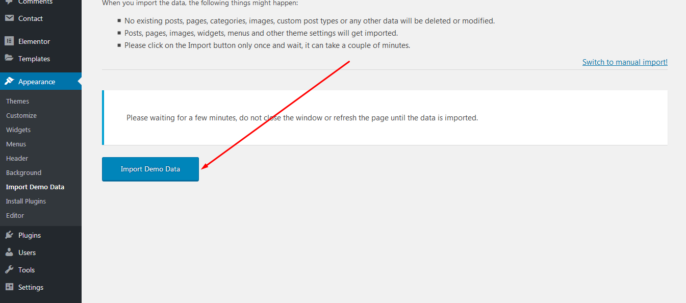
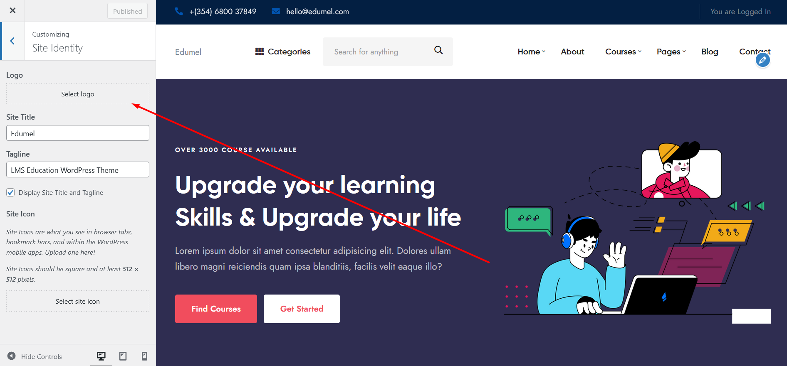

Education LMS WordPress Theme
By flexilecode
Thank you for purchasing our Product. In case of any questions or doubts, do not hesitate to contact us via out Themeforest profile . We will do our best to solve any problem concerning the project. At the same time we invite you to visit often our profile on Themeforest since there will be appearing the improvements of our project and the newest actualization.
Edumel – Online Learning and Education Wordpress Theme . Edumel is great assistant for operating online teaching centers, distance educational websites, e-learning service portals, online tutors, remote learners, private institutions, etc.
Edumel is fully compatible with latest version of Wordpress.
Right after the theme was activated, a notification at the top of the screen will suggest to continue with the installation of the plugins recommended for getting the best our of your theme.
edumel comes with one click demo installation exactly like the original demo.
There's 2 ways of importing demo data.
Just click on Import button and your demo site is ready.
If somehow the One click demo import fails to import your pages then you can try importing demo content manually.
To setup the blog page, in your WordPress admin panel, navigate to Settings → Reading.
Assuming you already have a page named "Blog", for the Front page display, select "A static page" and choose your "Blog" page as the Posts page. This is what you should be seeing on your screen from left side.
To setup the home page, in your WordPress admin panel, navigate to Settings → Reading.
Assuming you already have a page named "Home", for the Front page display, select "A static page" and choose your "HOME page as the home page. This is what you should be seeing on your screen from left side.
In your Wordpress admin dashboard, navigate to Theme Options
In your Wordpress admin dashboard, navigate to Customize → Logo.
When there's a new update available on Themeforest. Download the new updated theme. Then extract and upload new version from your dashboard Appearance → Themes.. Then activate the theme. During this process, your no website data will lost. Because all pages and posts data saves in Database.
Also after activating new theme, you needs to check that if there's any update available for edumel Core plugin as well by visiting this page Appearance → Install Plugins.
If you need any help Feel free to contact with us at our Themeforest profile flexilecode